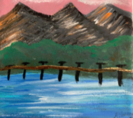

I absolutely love art!!! I've loved to draw, colour and paint ever since I was a little kid. I am not a professional but I love to try different things even if they don't look amazing. Painting is one of my favourite things to do because I find it very easy to express yourself that way. Here are some of my favourite paintings that I've made.
I also love to sketch with my pencil. Infact it's my favourite type of art because you can make so many different shades of the color grey. I like to sketch to relieve stress because it is very therapeutic. Here are some of my sketches.

I don't really do collage art but here is a piece I did for my art project this year.

I also do some digital art as well. I am not very experienced and I've started it last month. But it's also very fun as well. Included is a little animation I made for an art project as well.